|
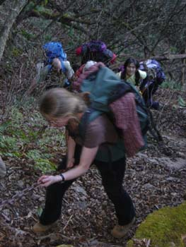
Here we go. |
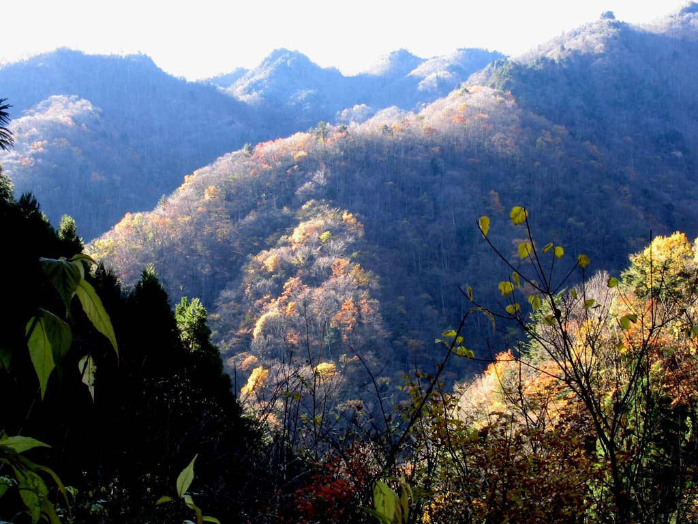
Patches of colours. |
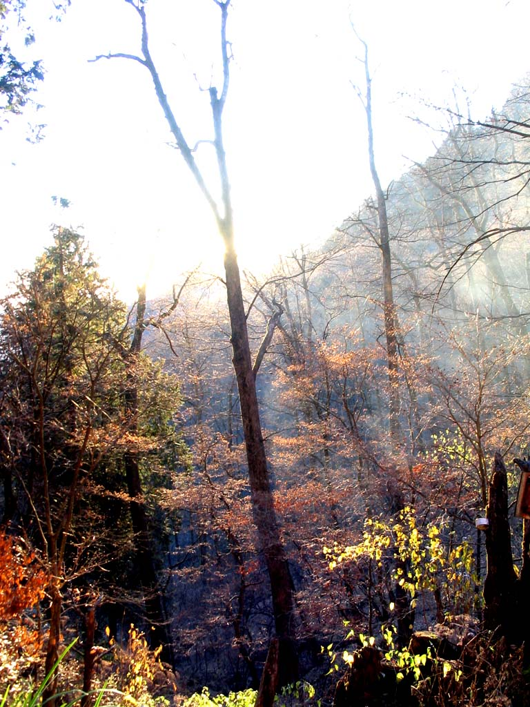
Fresh morning. |
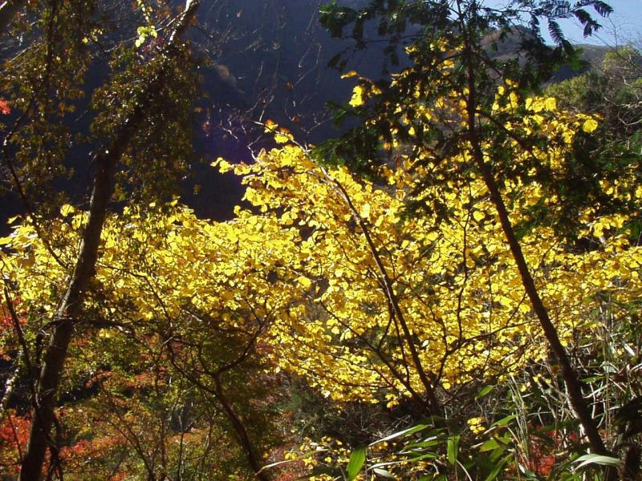
Gorgeous, eh? |
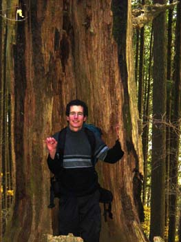
Frederick inside a hollow tree. |
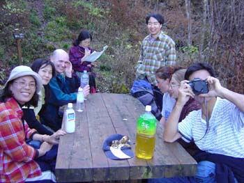
Perfect lunch table, except that it was too cold to stay still. |
|
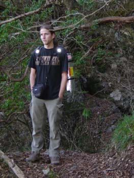
Hey, what's up? |
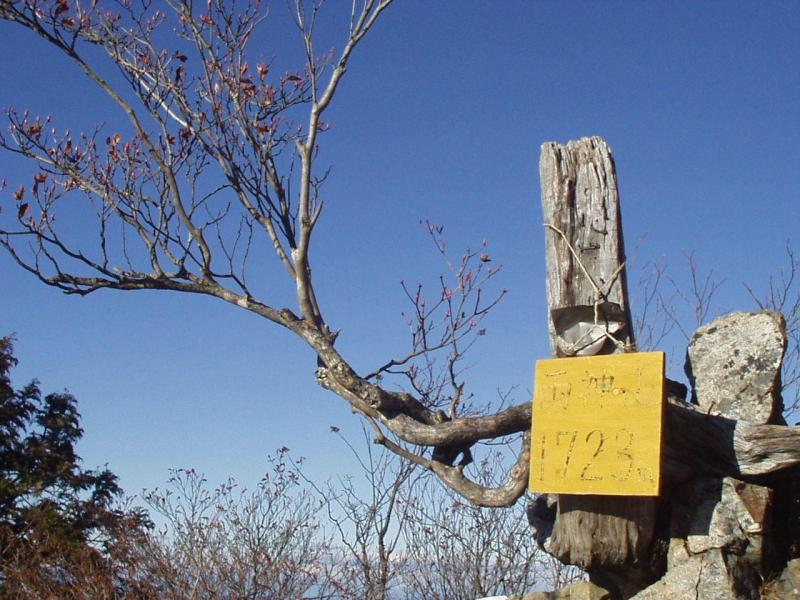
The summit! (1723 metres) |
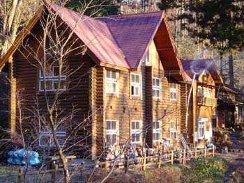
Had a nice chat with other lodgers, didn't we?
Who would have imagined a full hearty breakfast at 3am? |
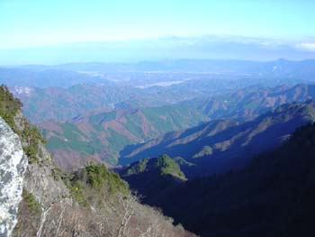
Nice view, eh? |
|
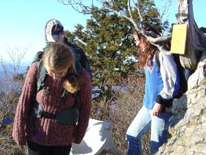
Alright, let's get going. |
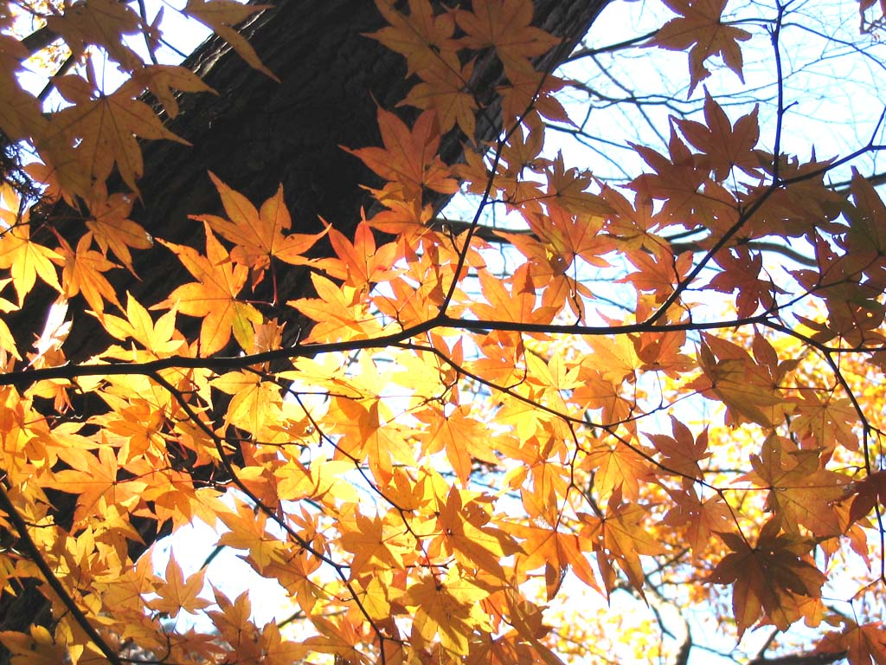
'Twas all about leaves, wasn't it? |
|
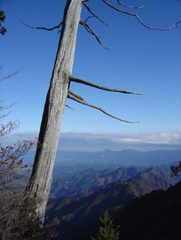
Ah, the mother nature ..... |
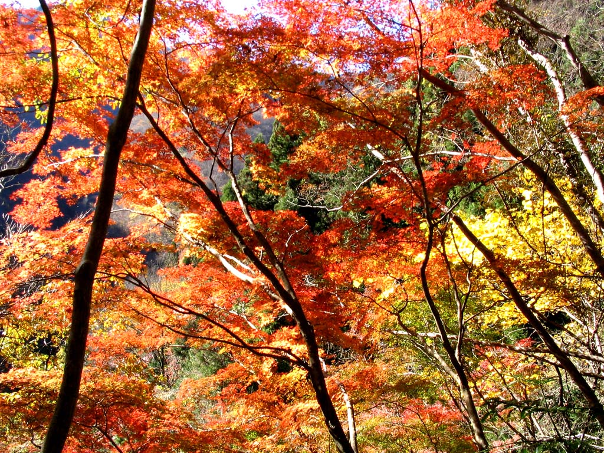
|